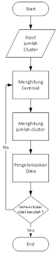
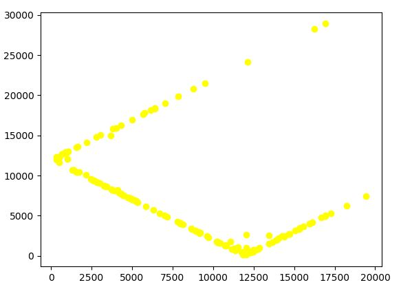
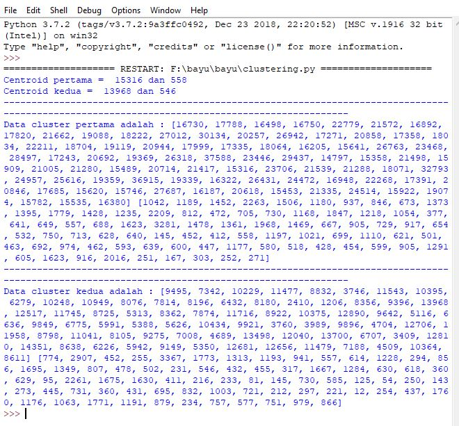

K-Mean Clustering¶
Penjelasan¶
K-means merupakan salah satu algoritma clustering. Tujuan algoritma ini yaitu untuk membagi data menjadi beberapa kelompok. Algoritma ini menerima masukan berupa data tanpa label kelas. Hal ini berbeda dengan supervised learning yang menerima masukan berupa vektor (x1 , y1) , (x2 , y2) , …, (xi , yi), di mana xi merupakan data dari suatu data pelatihan dan yi merupakan label kelas untuk xi.
Pada algoritma pembelajaran ini, komputer mengelompokkan sendiri data-data yang menjadi masukannya tanpa mengetahui terlebih dulu target kelasnya. Pembelajaran ini termasuk dalam unsupervised learning. Masukan yang diterima adalah data atau objek dan k buah kelompok (cluster) yang diinginkan. Algoritma ini akan mengelompokkan data atau objek ke dalam k buah kelompok tersebut. Pada setiap cluster terdapat titik pusat (centroid) yang merepresentasikan cluster tersebut.
K-means ditemukan oleh beberapa orang yaitu Lloyd (1957, 1982), Forgey (1965) , Friedman and Rubin (1967) , and McQueen (1967). Ide dari clustering pertama kali ditemukan oleh Lloyd pada tahun 1957, namun hal tersebut baru dipublikasi pada tahun 1982. Pada tahun 1965, Forgey juga mempublikasi teknik yang sama sehingga terkadang dikenal sebagai Lloyd-Forgy pada beberapa sumber.
Algoritma K-Means¶
Secara sederhana algoritma K-Means dimulai dari tahap berikut :
- Pilih K buah titik centroid.
- Menghitung jarak data dengan centroid.
- Update nilai titik centroid.
- Ulangi langkah 2 dan 3 sampai nilai dari titik centroid tidak lagi berubah.
Kita coba gambarkan dalam sebuah flowchart, agar kita lebih mudah memahami algoritma K-Means. Berikut adalah gambaran flowchartnya :

Jadi dari flowchart diatas, kita memiliki input dan 3 buah proses. Yaitu pertama adalah proses menghitung centroid, kemudian proses kedua menghitung data yang akan dikelompokkan dengan centroid, kemudian proses ketiga adalah mengelompokkan data berdasarkan jarak terdekat (minimum distance). Dan kita membuat perulangan dengan kondisi "apakah posisi centroid tetap dan tidak ada perubahan terhadap datanya ?" apabila ya maka kita selesai melakukan pengelompokan. Tapi apabila masih ada perubahan centroid maka kita update kembali nilai centroid melalui proses pertama.
Kelebihan Dan Kekurangan¶
Ada beberapa kelebihan pada algoritma k-means, yaitu:
- Mudah untuk diimplementasikan dan dijalankan.
- Waktu yang dibutuhkan untuk menjalankan pembelajaran ini relatif cepat.
- Mudah untuk diadaptasi.
- Umum digunakan.
Algoritma k-means memiliki beberapa kelebihan, namun ada kekurangannya juga. Kekurangan dari algoritma tersebut yaitu :
- Sebelum algoritma dijalankan, k buah titik diinisialisasi secara random sehingga pengelompokkan data yang dihasilkan dapat berbeda-beda. Jika nilai random untuk inisialisasi kurang baik, maka pengelompokkan yang dihasilkan pun menjadi kurang optimal.
- Dapat terjebak dalam masalah yang disebut curse of dimensionality. Hal ini dapat terjadi jika data pelatihan memiliki dimensi yang sangat tinggi (Contoh jika data pelatihan terdiri dari 2 atribut maka dimensinya adalah 2 dimensi. Namun jika ada 20 atribut, maka akan ada 20 dimensi). Salah satu cara kerja algoritma ini adalah mencari jarak terdekat antara k buah titik dengan titik lainnya. Jika mencari jarak antar titik pada 2 dimensi, masih mudah dilakukan. Namun bagaimana mencari jarak antar titik jika terdapat 20 dimensi. Hal ini akan menjadi sulit.
- Jika hanya terdapat beberapa titik sampel data, maka cukup mudah untuk menghitung dan mencari titik terdekat dengan k titik yang diinisialisasi secara random. Namun jika terdapat banyak sekali titik data (misalnya satu milyar buah data), maka perhitungan dan pencarian titik terdekat akan membutuhkan waktu yang lama. Proses tersebut dapat dipercepat, namun dibutuhkan struktur data yang lebih rumit seperti kD-Tree atau hashing.
Contoh studi kasus k-mean clustering¶
Menerapkan K-Means Clustering Pada jumlah-penduduk-berdasarkan-agama-2018-s2¶
Langkah 1: Import Libraries¶
import csv
import math
import random
import pandas as pd
import numpy as np
import matplotlib.pyplot as plt
akar = math.sqrtCara instal library pandas dan matplotlib.pyplot yaitu dengan cara membuka cmd administrator lalu ketik
pip install pandas
pip install matplotlibLangkah 2: Menginput Data¶
def program():
dataset = pd.read_csv("jumlah-penduduk-berdasarkan-agama-2018-s2.csv")Langkah 3: Mengambil dua fitur colom pada data tersebut untuk dijadikan variable¶
# mengambil kolom 2 dan 3
colum_islam = dataset.iloc[:, 2].values
colum_kristen = dataset.iloc[:, 3].valuesLangkah 4: Mencari centroid secara acak menggunakan import random dan menampilkan hasil pencarian¶
def mencari_centroid_dst():
# mengambil letak centroid pertama acak
random1 = []
for i in range(151):
random1.append(i)
hasil_random1 = random.choice(random1)
# hasil centroid pertama acak
cen_pertama1 = colum_islam[hasil_random1]
cen_pertama2 = colum_kristen[hasil_random1]
# mengambil letak centroid kedua acak
random2 = []
for j in range(151):
random2.append(j)
hasil_random2 = random.choice(random2)
# hasil centroid kedua acak
cen_kedua1 = colum_islam[hasil_random2]
cen_kedua2 = colum_kristen[hasil_random2]Langkah 5: Menghitung distance dari hasil pencarian centroid secara acak dengan cara mendeklarasikan list lalu hasil dari rumus dimasukkan ke list tersebut¶
if (cen_pertama1==cen_kedua1 and cen_pertama2==cen_kedua2):
mencari_centroid_dst()
else:
# menghitung distance ke centroid 1 dan centroid 2
hasil_hitung_pertama1 = []
hasil_hitung_pertama2 = []
hasil1 = []
hasil2 = []
anggota1_kiri = []
anggota1_kanan = []
anggota2_kanan = []
anggota2_kiri = []
jml_awal1 = []
jml_awal2 = []
for a in range(len(colum_islam)):
for b in range(len(colum_kristen)):
if (a==b):
jarak1 = akar(((cen_pertama1 - colum_islam[a])**2) + ((cen_pertama2 - colum_kristen[a])**2))
jarak2 = akar(((cen_kedua1 - colum_islam[a])**2) + ((cen_kedua2 - colum_kristen[a])**2))
if(jarak1 < jarak2):
hasil1.append(jarak1)
anggota1_kiri.append(colum_islam[a])
anggota1_kanan.append(colum_kristen[a])
hasil_hitung_pertama1.append(jarak1)
jml_awal1.append(jarak1)
hasil_hitung_pertama2.append(jarak2)
else:
hasil2.append(jarak2)
anggota2_kanan.append(colum_kristen[a])
anggota2_kiri.append(colum_islam[a])
hasil_hitung_pertama2.append(jarak2)
jml_awal2.append(jarak2)
hasil_hitung_pertama1.append(jarak1)Langkah 6: Menghitung rata-rata tiap kolom sebagai pusat cluster yang baru dengan rumus¶
# menghitung rata-rata tiap kolom sebagai pusat cluster yang baru
hasil1_baru = []
hasil2_baru = []
anggota_clus1 = []
anggota_clus2 = []
seluruh_kiri = []
seluruh_kanan = []
anggota1_kiribaru = []
anggota1_kananbaru = []
anggota2_kiribaru = []
anggota2_kananbaru = []
rata1_a = sum(anggota1_kiri) / len(anggota1_kiri)
rata1_b = sum(anggota1_kanan) / len(anggota1_kanan)
rata2_a = sum(anggota2_kiri) / len(anggota2_kiri)
rata2_b = sum(anggota2_kanan) / len(anggota2_kanan)Langkah 7: Menghitung distance dari pusat cluster yang baru lalu dimasukkan ke list¶
for j in range(len(colum_islam)):
for k in range(len(colum_kristen)):
if(j==k):
dist1 = akar(((rata1_a - colum_islam[j])**2) + ((rata1_b - colum_kristen[j])**2))
dist2 = akar(((rata2_a - colum_islam[j])**2) + ((rata2_b - colum_kristen[j])**2))
if (dist1<dist2):
hasil1_baru.append(dist1)
seluruh_kiri.append(dist1)
seluruh_kanan.append(dist2)
anggota_clus1.append(colum_islam[j])
anggota1_kiribaru.append(colum_islam[j])
anggota1_kananbaru.append(colum_kristen[j])
else:
hasil2_baru.append(dist2)
seluruh_kanan.append(dist2)
seluruh_kiri.append(dist1)
anggota_clus2.append(colum_islam[j])
anggota2_kiribaru.append(colum_islam[j])
anggota2_kananbaru.append(colum_kristen[j])Langkah 8: Menampilkan secara visualisasi menggunakan matplotlib¶
if (len(hasil1)==len(hasil1_baru) and len(hasil2)==len(hasil2_baru)):
plt.scatter(seluruh_kiri,seluruh_kanan,c='yellow')
plt.show()Langkah 9: Menampilkan hasil k-mean clustering¶
print ("Centroid pertama = ",cen_pertama1,"dan",cen_pertama2)
print ("Centroid kedua = ",cen_kedua1,"dan",cen_kedua2)
print ("----------------------------------------------------------------------------------------------------------------------------------------------")
print ("Data cluster pertama adalah :",anggota1_kiri,anggota1_kanan)
print ("----------------------------------------------------------------------------------------------------------------------------------------------")
print ("Data cluster kedua adalah :",anggota2_kiri,anggota2_kanan)
else:
program()
mencari_centroid_dst()
program()
OUTPUT¶


REFERENSI¶
https://id.wikipedia.org/wiki/K-means
https://www.ketutrare.com/2018/11/algoritma-k-means-clustering-dan-contoh.html